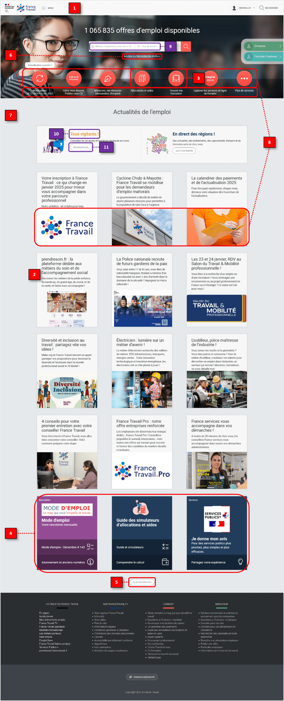

France Travail
Redesigning France Travail's homepage to make it easier to navigate through.
Category : Unsolicited redesign
Time frame: January 2025
Tools: Figma
France Travail's home page suffered from an outdated and unintuitive interface, as demonstrated through my heuristic evaluation which highlights problems with accessibility, coherence and information architecture.
- Objectives : Improve the navigation and make it consistent with the Service Public standards.
- Skills applied : UX audit, Wireframing, Prototyping (responsive).
- Solutions : A clear navigation bar, optimized information architecture, modernized design and a more accessible interface.
- Results : A more structured, readable and engaging site, facilitating access to services for all users.
As a job seeker looking for a UX/UI designer position, there was something ironic about having to complete administrative procedures on the France Travail website while constantly complaining about its unintuitive interface... So naturally, I decided it would make a good redesign subject to build my portfolio!
Context
France Travail is the public employment service in France that compensates job seekers and supports them in returning to employment. However, despite its institutional nature, its site dedicated to candidates has an outdated UI, far from the polished and refined interfaces of the Service Public website and most of its other organizations and administrations.
Problem Statement
How to modernize France Travail's homepage in line with the Service Public website while facilitating navigation, but without altering its content?
Objectives:
Redesign the France Travail homepage to:
- facilitate navigation.
- make it more consistent with the Service Public website, as well as its various organizations and administrations.
This project was carried out without access to the site's analytics or other challenges internally faced by France Travail.
üîç
UX Audit
Heuristic Evaluation
In the absence of a user panel with whom to conduct UX research, I undertook a heuristic evaluation of the France Travail homepage based on Jakob Nielsen's usability principles:
Visibility of System Status:
- There is no navigation bar indicating to the user where they are, or what other parts of the site they can navigate to.
- The articles do not indicate what type of news they are and where users will be taken when clicking on them (either francetravail.fr/actualites, francetravail.fr/candidat, or even a new tab to an external site).
Match Between System and the Real World:
- The "Allocations et aides" and "Trouver ma formation" icons don't really speak for themselves and can confuse the user.
- The placement and appearance of the "Newsletter", "Guide des simulateurs" and "Je donne mon avis" tiles suggest that they might be part of the "Actualités de l'emploi" section, which can confuse the user.
- The distant location of the "Plus d'actualités" button seems to dissociate it from the articles. It should be located immediately after the articles.
Consistency and Standards (Jakob's Law):
- The way links behave is inconsistent across the homepage: "Access my job search" is underlined when hovered, but the links under the icons ("M'actualiser", "Gérer mon dossier", etc.) are not.
- The Design System is radically different from those of the websites of other Service Public organizations and administrations.
Aesthetic and Minimalist Design:
- The size of article illustrations compared to navigation icons disrupts the visual hierarchy of information: the small navigation icons (main actions) get lost among the larger and more numerous article illustrations.
Accessibility
- Search bar placeholders: The color contrast is not sufficient.
- "All vigilant!": The color contrast is not sufficient (2:12).
- "Learn more": The hyperlink has a generic title, which reduces the usability of the site for screen reader users.
Competitive Analysis
While France Travail doesn't have competitors per se, we can compare its site to other sites referenced in the Service Public's directory of organizations and administrations to identify standards and best practices:
| Websites | üëç Strengths | üëé Weaknesses |
|---|---|---|
| Service-public.fr |
|
- |
| French Embassy in Phnom Penh |
|
|
| Paris Academy |
|
|
| Onisep |
|
|
üí°
Ideate
Wireframes


üìê
Prototype
Prototypes


Solutions
Consistency and Standardization:
- The dominant color is blue, similar to the Service Public website and most of its other organizations and administrations, which reinforces the institutional and official character of the France Travail site. Blue is also softer and less aggressive than the red originally used.
- All links behave in the same way and appear underlined when hovered, indicating to the user that they are clickable.
Information Architecture:
- The navigation bar has tabs allowing the user to easily switch from one part of the site to another, and to better locate themselves on the site.
- A carousel with a selection of articles that the user can refer to if they don't have the time or patience to browse all the articles on the homepage. A tag also helps to determine at a glance what category of article it is.
- Articles on the homepage are categorized, easily distinguished with large titles ("Actualités", "Evénements" and "Dossier") and number 3 to 4 per category to limit the user's cognitive load.
- The reduced size of article illustrations prevents them from eclipsing the buttons in the "Services Candidat" section (main actions).
- The newsletter has its own section ("Mode d'emploi, le mag"), which avoids confusing it with other articles. Similarly, the guide to allocation and aid simulators has its own button in "Services Candidats", while "Je donne mon avis" is now located in the footer.
Accessibility:
- The placeholders of the search bars have a sufficiently high color contrast with the background so that they are visible to as many users as possible.
- The "See all" buttons are named in such a way that screen readers can guide all users correctly and efficiently. Their color contrast is also sufficiently high so that they are visible to as many users as possible.